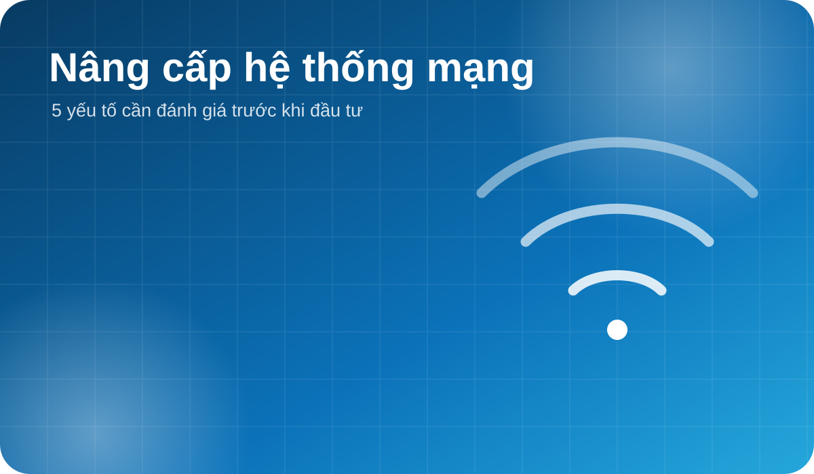
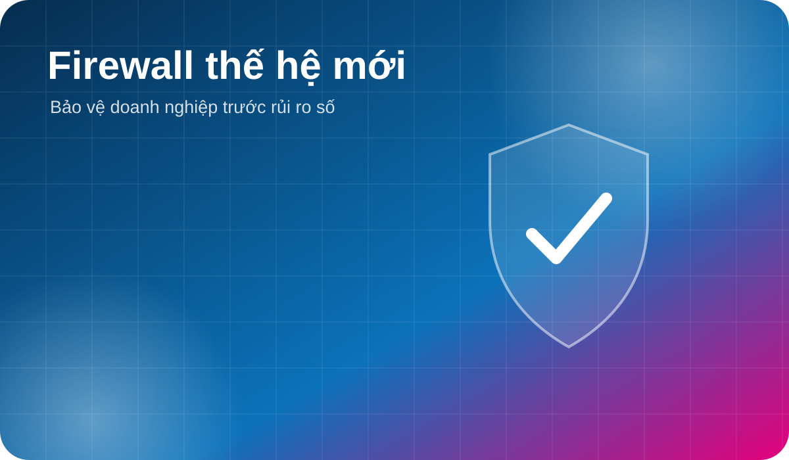

GIẢI PHÁP
5 yếu tố cần đánh giá khi nâng cấp hệ thống mạng doanh nghiệp
Hiện trạng, quy mô người dùng, phân vùng mạng, bảo mật và khả năng mở rộng.
Đọc thêm →TIN TỨC & KIẾN THỨC
Các nội dung hữu ích về hạ tầng, bảo mật và vận hành CNTT.

Hiện trạng, quy mô người dùng, phân vùng mạng, bảo mật và khả năng mở rộng.
Đọc thêm →
Kiểm soát truy cập, VPN, lọc ứng dụng và giám sát tập trung.
Đọc thêm →
Cân bằng hiệu năng, độ sẵn sàng và tổng chi phí sở hữu.
Đọc thêm →